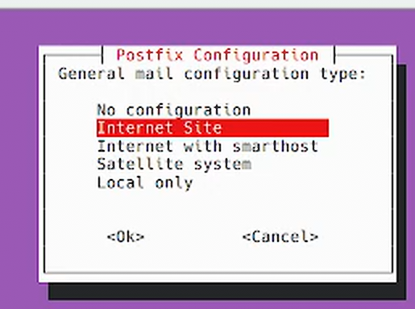
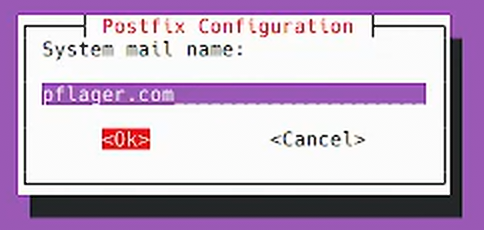

My first blog entry
I did a .fork of https://github.com/pflagerd/blog-bootstrap
A chromium-centric file-only (server-not-needed) blog about all the pflager.net systems.
There's a meta-blog here where I track my progress on modifying/improving this blog's content.
I need some kind of systems map which shows all the systems I'm using and paying for.-
Set up sherri@pflager.com and dan@pflager.com for receive-only email.
Set up the system which has all Patrick's domains pointing at it now (currently called "systems/danielpflager.com 72.167.33.146 (146.33.167.72.host.secureserver.net godaddy.com)").
gitlab instance is not responding to https: or to push requests. Migrate it to R710b.
Working on a utility called ~/bashrc.d/hosts which will update /etc/hosts with a set of known ip addresses derived from router settings.
Working on getting tigervnc working on all linux systems. Not easy. I have some of the beginnings of that in a directory ~/bashrc/others/.vnc which contains some of the things needed to set up a tigervnc server. Also the startup script bashrc.d/tigervncserver
Ordered hdmi adaptors which allow screen contents to be displayed by tapping into the hdmi signal. This so I can record what screens look like when configuring things on computers directly.
Ordered a drive enclosure to allow testing various drives which I've dissected out of their external drive bay cases.
Write down what OS/version is on each computer in systems
Somehow on the treadmill desk computer I get 2g on speedtest.net, but not on my dell7750 which shows a link speed of 100Mb/s
r710b has a bad Raid controller battery
r710a/gitlab needs migrating to kubuntu. it also needs an update to the gitlab instance.
need to fix bashrc.d/clion, bashrc.d/webstorm, bashrc.d/idea and bashrc.d/webstorm
need to fix bashrc.d/python and the rest
check bashrc.d/* for which and other commands generating output not being redirected to /dev/null 2>&1
I want the new KVM switch above the r910a.
Ordered a new KVM switch that will use hdmi rather than vga. Want to figure out how to control it with an arduino instead of a manual switch pad. Also ordered some adaptors to convert VGA to hdmi for those computers which only produce vga.
guppy is on Fedora 36. I updated guppy and zax both manually with much fiddling to 42.
ubuntu asked me several questions about how to set up the default configuration. I recorded my responses here: dell7750:/home/oy753c/Videos/2025-10-07 13-49-06.mkv
 The installation proceeded and the following is the resulting output:
srv447782:~> sudo apt install postfix Reading package lists... Done Building dependency tree... Done Reading state information... Done The following additional packages will be installed: ssl-cert Suggested packages: procmail postfix-mysql postfix-pgsql postfix-ldap postfix-pcre postfix-lmdb postfix-sqlite sasl2-bin | dovecot-common resolvconf postfix-cdb mail-reader postfix-mta-sts-resolver postfix-doc The following NEW packages will be installed: postfix ssl-cert 0 upgraded, 2 newly installed, 0 to remove and 0 not upgraded. Need to get 1,265 kB of archives. After this operation, 4,248 kB of additional disk space will be used. Do you want to continue? [Y/n] Y Get:1 http://us.archive.ubuntu.com/ubuntu jammy/main amd64 ssl-cert all 1.1.2 [17.4 kB] Get:2 http://us.archive.ubuntu.com/ubuntu jammy-updates/main amd64 postfix amd64 3.6.4-1ubuntu1.3 [1,248 kB] Fetched 1,265 kB in 1s (1,369 kB/s) Preconfiguring packages ... Selecting previously unselected package ssl-cert. (Reading database ... 101188 files and directories currently installed.) Preparing to unpack .../ssl-cert_1.1.2_all.deb ... Unpacking ssl-cert (1.1.2) ... Selecting previously unselected package postfix. Preparing to unpack .../postfix_3.6.4-1ubuntu1.3_amd64.deb ... Unpacking postfix (3.6.4-1ubuntu1.3) ... Setting up ssl-cert (1.1.2) ... Setting up postfix (3.6.4-1ubuntu1.3) ... Adding group `postfix' (GID 122) ... Done. Adding system user `postfix' (UID 113) ... Adding new user `postfix' (UID 113) with group `postfix' ... Not creating home directory `/var/spool/postfix'. Creating /etc/postfix/dynamicmaps.cf Adding group `postdrop' (GID 123) ... Done. setting myhostname: srv447782.hstgr.cloud setting alias maps setting alias database changing /etc/mailname to pflager.com setting myorigin setting destinations: $myhostname, pflager.com, srv447782.hstgr.cloud, localhost.hstgr.cloud, localhost setting relayhost: setting mynetworks: 127.0.0.0/8 [::ffff:127.0.0.0]/104 [::1]/128 setting mailbox_size_limit: 0 setting recipient_delimiter: + setting inet_interfaces: all setting inet_protocols: all /etc/aliases does not exist, creating it. WARNING: /etc/aliases exists, but does not have a root alias. Postfix (main.cf) is now set up with a default configuration. If you need to make changes, edit /etc/postfix/main.cf (and others) as needed. To view Postfix configuration values, see postconf(1). After modifying main.cf, be sure to run 'systemctl reload postfix'. Running newaliases Created symlink /etc/systemd/system/multi-user.target.wants/postfix.service → /lib/systemd/system/postfix.service. Processing triggers for ufw (0.36.1-4ubuntu0.1) ... Processing triggers for man-db (2.10.2-1) ... Processing triggers for rsyslog (8.2112.0-2ubuntu2.2) ... Scanning processes... Scanning linux images... Running kernel seems to be up-to-date. No services need to be restarted. No containers need to be restarted. No user sessions are running outdated binaries. No VM guests are running outdated hypervisor (qemu) binaries on this host.
All I think I know for sure is that postfix is now installed, but I'm not sure about its configuration.
So I fed all the output above back to the same DeepSeek session and it offered more advice:
The default contents of /etc/postfix/main.cf and the contents recommended above don't compute. I may have to edit the file manually, line by line, using https://www.postfix.org/BASIC_CONFIGURATION_README.html as a reference.
I used DeepSeek to get some advice: